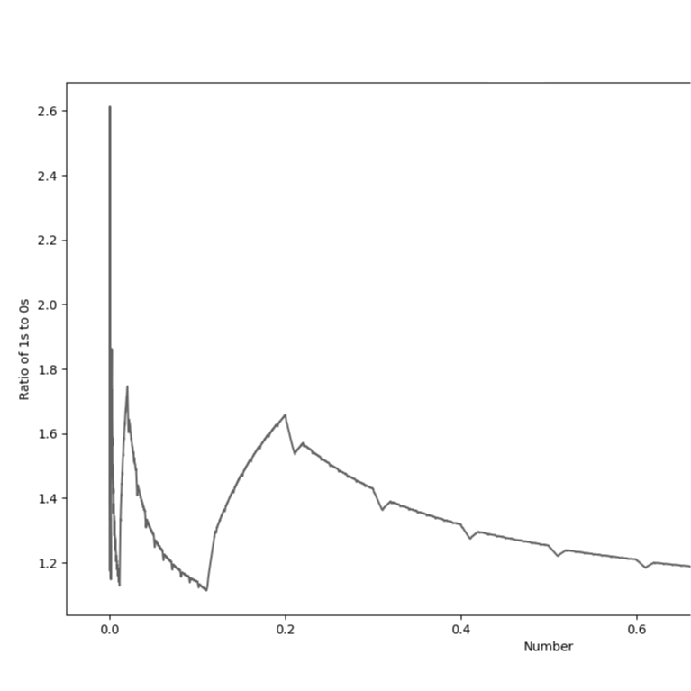

01 Theory

In 8th grade, I had the idea for a mathematical theory: 01 Theory.
The basic idea is that if you analyzed all numbers, from negative to positive infinity, and
counted the number of '1's and '0's that appeared in
the numbers (ex. 10165 has 2 '1's and 1 '0') that the 1s would not only out number the 0s,
but by an infinite amount.
This is due to the simple fact that a number can start with a 1 but
not a 0. In any place that a 0 can appear, a 1 could take its place, but this is not correct
the other way around, due to the fact that a number
can start with a 1. As a result, there will be an infinite number more 1s than 0s.
Using my new programming skills, I coded a program in Python that
analyzes the ratio between 1s and 0s and uses MatPlotLib to create a graph. The graph can be
seen above. As can be seen,
the ratio always remains above 1, as there will always be more 1s than 0s, however, the
graph tends downward (to an asymptote of 1) as the numbers get larger.
Analysis: This is because if we think about why the ratio is above 1
at all, is because of the first digits of numbers. Click to continue.